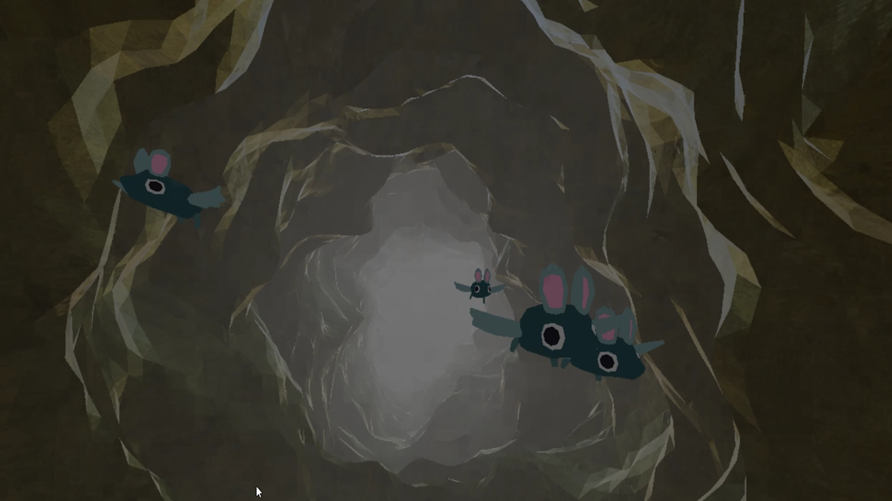
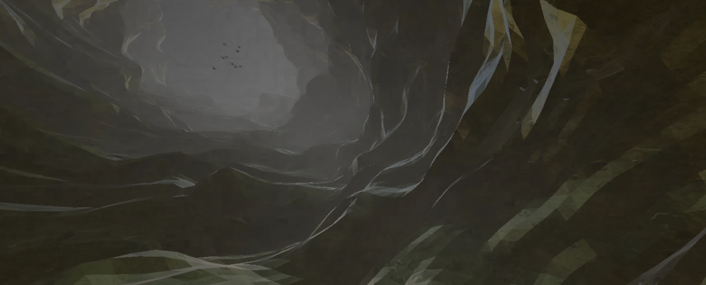
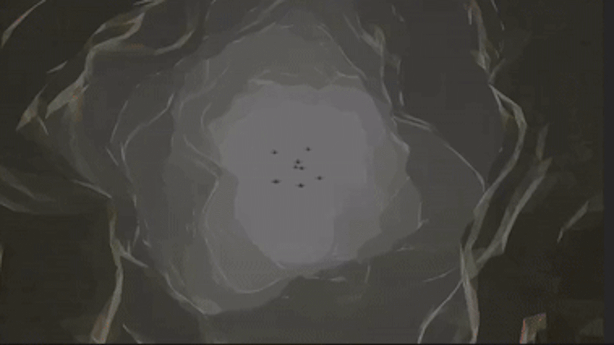

PrehistoricCave
This VR experience, developed for H'ability, focuses on vestibular rehabilitation by placing the patient in a giant tunnel, with continuous movement challenging the inner ear's balance system.
 The difficulty in this exercise came from the requests of healthcare professionals: the tunnel needed to become sinuous at any moment and change its direction. Additionally, some wanted "gamification" where the patient must avoid obstacles.
As in SquatVR, I designed obstacles that wouldn’t scare the player. I decided to add bats that the player would hit if they didn't dodge them. These bats have a cartoon-style death animation to make the experience less dramatic.
After completing the development, I was surprised when the healthcare professionals asked to make the game even more challenging. Therefore, I added a "random direction" mode that makes the player switch between moving forward and backward unpredictably.